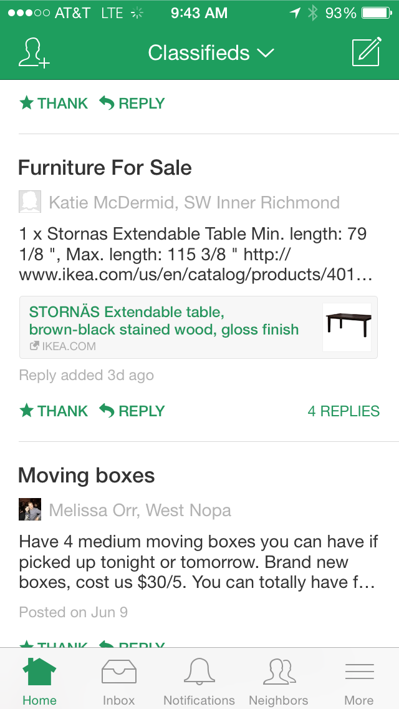
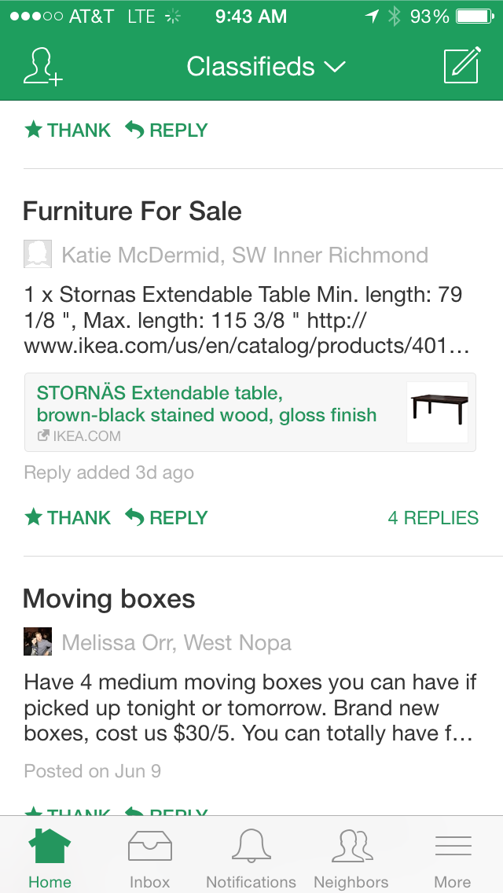

Nextdoor
2014 JUNE - PRESENT
In my first 3 weeks at Nextdoor, I worked with four engineers and one product manager to launch automatic link previews for new posts, which was rolled out platform-wide to over 40,000 U.S. neighborhoods.
Since successfully completing this project, my responsibilities have expanded to include three other projects: the enhancement of our current photo upload experience, designing an entirely new type of post on iOS, Android and desktop, and introducing personability into static pages on the site.
A few tools I've relied on thus far:
- Experience diagramming
- HTML5 & CSS3
- Adobe CS6
- Sketch 3
- Thumbnail sketches
- InVision and Keynote prototypes
- Interaction animations
- Design specs
- Wireframes
- Pen and paper :)
Smartlinks
This was my first project at Nextdoor.


 
